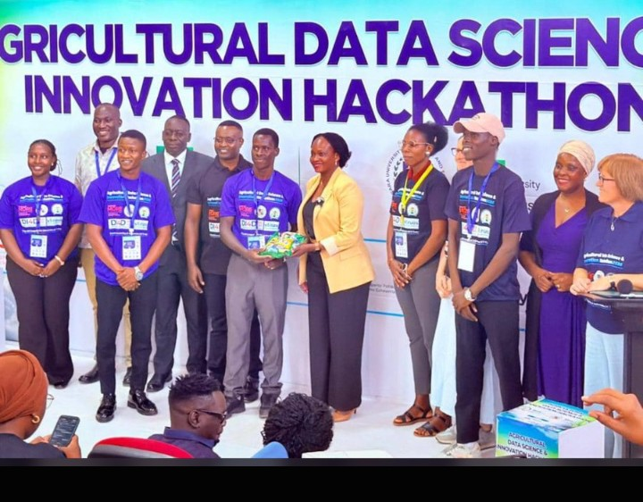
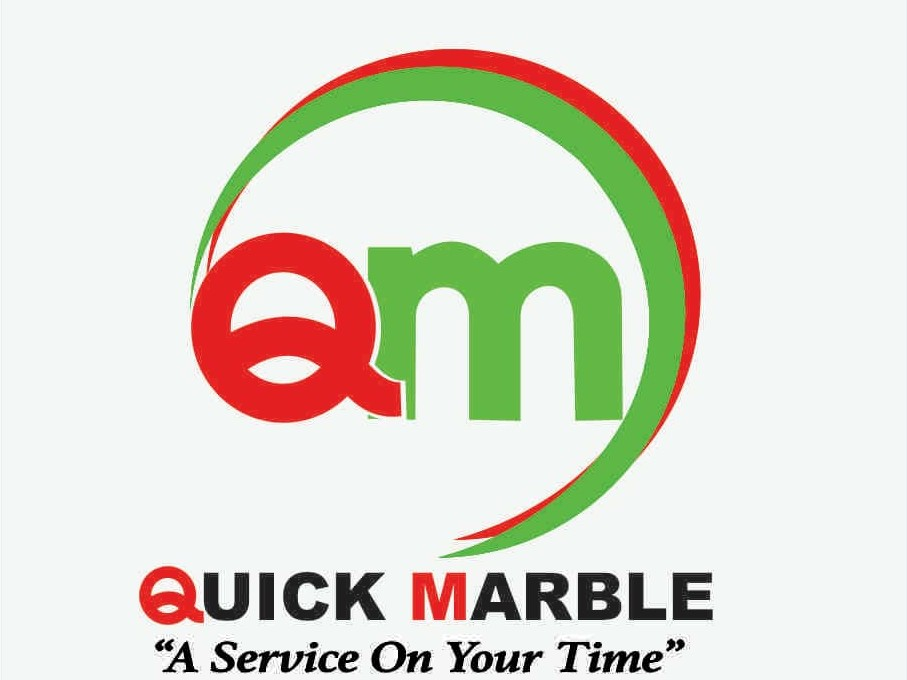

03 / SELECTED PROJECTS
From problem framing
to implementation.
Selected projects, with the problem, approach, contribution and technologies made
explicit.
01 · FEATURED / IN DEVELOPMENT
CampusNova
A role-based academic hub for students, lecturers and administrators
Problem
Academic information and workflows can be fragmented across tools and manual processes.
Attendance collection and sharing records can also consume time and complicate verification.
Solution & approach
CampusNova is being developed as a unified academic platform with separate student, lecturer
and administrator dashboards. It brings academic support and campus workflows into one
role-aware application, with attendance options using geofencing and Bluetooth proximity.
Key capabilities
- Role-based dashboards and access control
- Student and lecturer experiences
- Administrator management workflows
- Attendance capture using geofencing and Bluetooth options
- AI-assisted academic support features
- API-backed application architecture
My contribution
Initiated and developed the platform, worked on its backend and application architecture, and coordinated
team formation as the project expanded toward broader development and deployment.
FlutterFastAPIPythonPostgreSQLAI
integration
These links are demonstrations. They may not represent the full production application or
all roles and features.
02 · DATA / HACKATHON
Ekiriisa — Agricultural Data Insights
Data-informed insight into manure nutrient loss for agricultural extension planning
Problem
Livestock manure can lose nutrients before they are effectively returned to agricultural land. The
challenge was to explore this issue with data and make the insights useful to agricultural
decision-makers.
Solution
A data-analysis and visualization project focused on identifying patterns in manure nutrient losses and
communicating them through an interactive dashboard and analytical narrative.
Contribution & strengths demonstrated
- Team leadership and collaboration in a 48-hour competition
- Data preparation, analysis and interpretation
- Problem framing and pitch development
- Translating findings into dashboard-oriented insights
PythonPandasData
analysisQlikVisualization

MUST team · 3rd place out of 14 teams.
03 · BUSINESS APPLICATION
Quick Marble & Granite
Multi-branch business management application

Problem
Business processes spanning clients, quotations, contracts, branch operations and reporting require
coordinated records and visibility.
Solution
A management application designed to centralize key operational workflows and provide a more consistent
way to manage business information.
Contribution
Application development and implementation work on the business system. In an interview, I can explain
the specific modules and technical decisions I contributed to.
Technologies
Flutter and Firebase.
FlutterFirebaseBusiness workflows
Application walkthrough ↗
04 · WEB / PHP
MediStock
Pharmacy inventory and expiry management
Problem
Pharmacy stock needs visibility, expiry monitoring and orderly inventory handling to reduce the risk of
overlooking items nearing expiry.
Solution
A pharmacy management system that tracks stock and expiry information and applies the FEFO (First Expiry,
First Out) inventory principle.
Technical focus
Web application development, database interaction and inventory logic, with emphasis on expiry tracking
and structured records.
PHPPDOMySQLHTMLCSSJavaScript
Repository ↗
05 · COLLABORATIVE GAME
Duulu
Multiplayer game concept with computer opponents
Project
A collaborative game project exploring multiplayer gameplay and computer-controlled opponents, including
animated avatar concepts.
My contribution
Contributed to scoring logic and avatar-related implementation. Further detail on model training or
animation tooling should be added only when the specific work is demonstrable.
Three.jsTypeScriptGame logic
06 · PUBLIC WEB
Standard Hill School Website
Information website with admissions enquiries
Problem & solution
Parents and prospective students need access to school information and a way to send enquiries. This
website presents information and an enquiry pathway.
Technical focus
Responsive web design and client-side interaction.
HTMLCSSJavaScript
Visit website ↗